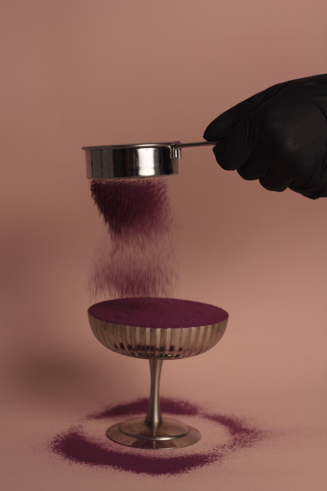

THE ONLINE PORTFOLIO
Flavour. Form. A little imagination.
From the first slice to a table full of possibilities. Explore the pastry, bread and shared moments behind Lina.Pastry.


FOUR COLLECTIONS
Choose a starting point.
Browse by form, or let the full collection unfold below.


THE SELECTED WORK
A closer look.
Open a photograph to explore the details.
A practice across pastry, bread and occasions.
23 selected works, from single portions to shared tables. Each image is a starting point for a conversation about what could suit your venue.
Layers, slices & celebrations.
Layered cakes, celebration cakes and cheesecakes, from whole centrepieces to individual slices. Explore the textures, layers and finishes.
Small bites. Thoughtful details.
Cream cookies, glazed doughnuts and individual desserts in a coupe. Small formats, carefully finished for a sweet moment or a shared table.
The pleasure of baking.
Croissants, breads and Danish pastries. French boulangerie complements the pastry practice with dough, lamination and a different kind of texture.
Made to bring people together.
Sweet tables, table styling and workshops. These moments show how individual creations become part of a shared experience.
23 works
Cakes & Cheesecakes
The classic cheesecake
Two generous slices, with a caramelised top and creamy centre.
Cookies & Small Desserts
Cream cookies — a cocoa finish
Cream-topped cookies with a delicate dusting of cocoa.
Cakes & Cheesecakes
A closer look at texture
A green cheesecake slice, held up to reveal its centre.
Cakes & Cheesecakes
A seasonal cake with figs
Sliced cake, piped cream and fresh figs for the table.
Cakes & Cheesecakes
Layer upon layer
Thin cake layers and cream, composed as one.
Cakes & Cheesecakes
Colour between the layers
A playful approach to the layered cake.
Cakes & Cheesecakes
Made for an occasion
Layered cakes, dressed for the table.
Cakes & Cheesecakes
A number worth celebrating
A celebration cake with a personal shape.
Cakes & Cheesecakes
The art of the slice
A simple presentation that lets texture speak.
Cakes & Cheesecakes
A whole-cake moment
A generous centrepiece with a considered finish.
Cookies & Small Desserts
Glazed doughnuts
A smooth glaze, finished with chocolate shavings and berry pieces.
Cookies & Small Desserts
The coupe collection
A layered dessert with a theatrical finish.
Cookies & Small Desserts
A final flourish
Colour, movement and a little finishing magic.
Cookies & Small Desserts
The finishing ritual
A coupe dessert, dusted just before the moment.
Cookies & Small Desserts
Piped by hand
Each movement becomes part of the final presentation.
Cookies & Small Desserts
A delicate finish
A textured topping, falling into place.
Boulangerie
French boulangerie
Croissants, lamination and the pleasure of baking.
Boulangerie
The bread table
An assortment from the boulangerie portfolio.
Boulangerie
Danish pastries
Small pastries, shaped and finished with care.
Gatherings
A table for celebration
Individual desserts, brought together for an occasion.
Gatherings
Dessert meets table styling
A sweet table considered as part of the setting.
Gatherings
Set for a gathering
Atmosphere begins with the table.
Gatherings
The joy of making together
A shared workshop moment around pastry.
BEYOND THESE PHOTOGRAPHS
A wider repertoire.
My practice also includes traditional and vegan layered cakes, Chocolate Medovik, cake pops, mochi, chocolates and seasonal cheesecake variations. Bread-making includes croissants, baguettes and Danish pastries.
For a venue collaboration, the starting point is your concept and kitchen. The portfolio shows the range of the practice; the final menu and format are developed together.
Explore menu consultingLET’S CREATE TOGETHER
Seen a direction you would like to explore?
Tell me which collection caught your eye, and what you have in mind for your venue or occasion.